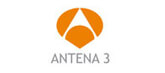
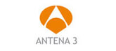

Contáctanos
¡Contacta por Whatsapp!
+34 620 206 345
Horario 09:00 - 20:00 (GMT+1)
Solicita tu beca
Contáctanos
¡Contacta por Whatsapp!
+34 620 206 345
Horario 09:00 - 20:00 (GMT+1)
Solicita tu beca
Por qué con IMF:

Triple titulación

Bolsa de empleo y prácticas

Online o semipresencial

Financiación sin intereses

Clases en directo

Formación eminentemente práctica enfocada al mercado laboral
Beca del 65%
¡Contacta por Whatsapp!
+34 620 206 345
Horario 09:00 - 20:00 (GMT+1)
Consigue en un año la doble titulación de Master en Marketing Digital (IMF + Universidad Camilo José Cela) y únete a la comunidad de profesionales con más auge del momento. El único máster online en el que aprenderás a elaborar un plan de marketing, a captar (SEO, SEM, redes sociales, formatos publicitarios, contenidos), a convertir (comercio electrónico) y a realizar una adecuada analítica web.
Las aptitudes o skills en marketing digital y la comunicación online son ya un requisito indispensable en cualquier departamento de marketing. Las empresas son conscientes de que internet forma parte del día a día del usuario y que vive conectado a través de ordenador, tablet o móvil. Términos como SEM, SEO, Social Media o Content marketing entre otros forman ya parte de cualquier oferta de trabajo del sector. Todo esto, año tras año, se ve reflejado un constante incremento en los presupuestos destinados al marketing digital en las organizaciones de todo el mundo.
Queremos unir al Master en Marketing Digital la experiencia de profesionales de primer nivel.
Tras superar con éxito el máster en marketing y comunicación digital, los alumnos obtendrán las siguientes titulaciones:
Profesionales del marketing, los medios de comunicación y la publicidad o marketing digital, que necesiten o quieran completar su formación con contenidos específicos del entorno digital. Del mismo modo también se dirige a emprendedores o personal a cargo de Pymes que quieran reorientar su carrera hacia el marketing digital. Está pensado para persona que desee obtener una visión estratégica y que considere añadir en su estrategia de marketing y comercial los los canales digitales.
Las aptitudes o skills en marketing digital y la comunicación online son ya un requisito indispensable en cualquier departamento de marketing. Las empresas son conscientes de que internet forma parte del día a día del usuario y que vive conectado a través de ordenador, tablet o móvil. Términos como SEM, SEO, Social Media o Content marketing entre otros forman ya parte de cualquier oferta de trabajo del sector. Todo esto, año tras año, se ve reflejado un constante incremento en los presupuestos destinados al marketing digital en las organizaciones de todo el mundo.
El máster online en marketing Digital de IMF está dirigido principalmente a tres perfiles. Por un lado, profesionales del marketing tradicional que desean dar el salto y actualizar sus conocimientos al mundo digital, gente del mundo del periodismo o la comunicación que quiere reciclarse y adaptarse a los nuevos medios y por último a gente que está dentro de empresas y que desea asegurarse un puesto de responsabilidad dentro del área de marketing digital.
El Máster en Comunicación y Marketing digital capacita para poder desarrollar un plan de medios digitales con seguridad y llevarlo a cabo con éxito. Dota de conocimiento a los alumnos para que puedan asesorar a empresas y realizar labores de consultoría. Además da una titulación de Community manager que permite desempeñar dicha función tanto como freelance como dentro de una organización.
El máster se enfoca desde una perspectiva práctica y estratégica combinando contenidos generalistas y materias más especializadas con las que profundizar en los temas más candentes y las herramientas que demanda el actual mercado laboral.
Conocer y dominar los medios digitales y el entorno publicitario online para establecer la estrategia publicitaria más efectiva y conseguir así los objetivos de cada acción del Plan de Marketing.
Además, con el Máster en Marketing Digital aprenderás:
MATERIA I
MATERIA II
MATERIA III
MATERIA IV
MATERIA V
MATERIA VI
MATERIA VII
MATERIA VIII
MATERIA IX
MATERIA X
CURSO I
Básico, Preintermedio, Intermedio o Avanzado
El alumno podrá escoger uno de los cuatro niveles
El Grupo IMF mantiene acuerdos de colaboración académica con la Asociación de Marketing de España (MKT)

Prever 2013 otorgado a IMF BS por su labor en favor de la divulgación e implantación de la prevención de los riesgos laborales.
Carlos Martinez CEO de IMF, fue condecorado con la medalla de oro del distintivo rojo al mérito profesional de las Relaciones Industriales y Ciencias del Trabajo, concedido en el marco de los Premios Nacionales e Internacionales, Premios Prever 2012.
Carlos Martinez, ha sido galardonado en el año 2015 con la Medalla de Oro al Mérito Profesional del Foro Europa 2001.
IMF ofrece una metodología flexible adaptada a tus necesidades. Te permitirá estudiar y acceder al contenido estés donde estés y de forma compatible con tu situación laboral, personal o familiar. Se trata de una modalidad testada y avalada por la satisfacción de más de 80.000 alumnos.
Todos los alumnos podrán disfrutar de:
La evaluación del Máster se realizará mediante evaluación continua a medida que se avanza en el estudio del curso. Se evaluará cada módulo mediante la combinación de un examen online y dos casos prácticos.
Para poder obtener los títulos de Máster en Marketing y Comunicación Digital por la Universidad Camilo José Cela y por IMF, es necesaria la superación de todos los módulos del programa así como la realización de un Trabajo de Fin de Máster.
Tras superar con éxito el máster en marketing y comunicación digital, los alumnos obtendrán las siguientes titulaciones:
Al finalizar obtendrás un título de Master por la Universidad Camilo José Cela y un título de Master por IMF Business School.
La Universidad Camilo José Cela está adaptada al plan Bolonia.
IMF Business School ofrece el servicio para gestionar la Apostilla de la Haya sobre tu título. Este sello certifica la autenticidad de la firma del mismo, reconociéndolo en cualquier país del Convenio de la Haya de 5 de octubre de 1961, sin necesidad de cualquier otra autenticación.
El coste de este servicio es de 100 € por cada título. Si deseas matricularte como nuevo alumno en IMF Business School, puedes solicitar este servicio durante el proceso de matriculación. Si eres antiguo alumno de la escuela, o estás estudiando actualmente con nosotros, y no has solicitado anteriormente la apostilla de tu título, contacta con nosotros en el 900 31 81 11 (+34 913645157 desde fuera de España) y te informaremos.
El cuadro de tutores del Máster en Marketing Online está formado esencialmente por profesionales de empresas y del mundo académico, que pueden transmitir a los alumnos experiencias laborales vivas y aportar ejemplos válidos en el ámbito del marketing y comunicación digital.

PHD por la Universidad Complutense de Madrid, MBA-E por ICADE y consultor certificado Success Insights para la evaluación del talento humano por Integrando Excelencia.
Emprendedor y fascinado por la comunicación en el área del emprendimiento.
Lleva más de 20 años en el mundo del marketing trabajando como director en este área en varias empresas y universidades como la Universidad Complutense de Madrid, la escuela CICE o el CENP.
Hace 6 años comenzó sus propios proyectos de emprendimiento entre los que destaca BDC Spain, donde ha mentorizado y asesorado a diversas entidades educativas. En el último año ha desarrollado varios proyectos relacionados con el marketing de la belleza.Todo ello le ha permitido ver el marketing desde distintos ángulos y perspectivas, y así se lo hace ver a sus alumnos.
Human Resources and Organization Senior Manager en ACCIONA INFRASTRUCTURE.
Licenciado en Economía y en Ciencias de la Comunicación, cuenta con un Master en ESIC, Business & Marketing School y posgrado en Marketing por la Florida Atlantic University.
Ha sido Corporate Talent Manager en Acciona y Senior Manager en PricewaterhouseCoopers
Socio fundador de la consultora de marketing Lateral Zinkin.
Licenciado en Derecho, Diplomado en Empresariales por ICADE y Master en Dirección Comercial y de Marketing.
Experto en marketing jurídico y para emprendedores, redes sociales y transformación digital. Ha trabajado en Agencias y Consultoras de Marketing como Director de Cuentas y Servicios al Cliente hasta la creación de la consultora de marketing Lateral Zinkin, especializada en el sector servicios y el entorno digital. Ha trabajado para clientes como La Caixa, Banco Cooperativo, Cajamar, Caja Duero, Vodafone, Museo Thyssen, Turismo de Castilla-La Mancha, Seguros Nuez, Turismo de Noruega o Loney Planet.
Además da clases en masters y programas en diversas instituciones y formación incompany.

Experto y consultor estratégico para instituciones y empresas en diferentes áreas de negocio.
Cuenta con una larga experiencia como directivo en importantes escuelas de negocio y centros de formación.
Su preparación académica incluye un Máster en Gestión de Empresas por IE University y un Executive Máster en Dirección Comercial y Marketing por IE Business School, así como un Global Business Strategy Program por Cheung Kong Graduate School of Business de Shanghai.
Head of Integrated Production de LOLA MullenLowe.
Comenzó su carrera como diseñador y programador. Al poco tiempo descubrió la amplitud del Marketing entrando a formar parte en Wysiwyg trabajando desde el área de servicios al cliente para compañías como Diesel, Barclays, Nokia y Camper. Tras 6 años dedicados a la especialidad digital, creo y evolucionó en Leo Burnett Iberia, proporcionando a clientes como Kelloggs´, Fiat, DIA y Grupo VIPS la cobertura de sus necesidades digitales a nivel estrategia, creatividad y producción. En 2012, comienza su carrera en LOLA Mullen Lowe con el mismo objetivo de digitalizar una compañía. En LOLA Mullen Lowe, evolucionó hasta convertirse en Head of Delivery llevando con su equipo adelante todos los proyectos de la compañía de la mano de la estrategia y la creatividad con un claro enfoque y dimensión digital.
Consultor freelance de Marketing 2.0.
Después de estudiar Publicidad y Marketing ha desarrollado su actividad profesional en el ámbito de la formación y la consultoría durante casi 20 años, especializándose en Marketing online y e-commerce.
Es el creador de _comunica2punto0, y cofundador y director de marketing de la malla ixuxuxuu. Entre sus proyectos se encuentran communitymanager.es, onlinevideomarketing.es, derechointernet.es y formacionsocialmedia.es. Es colaborador habitual de varias empresas como consultor y/o formador freenlance impartiendo, tutorizando y desarrollando contenidos para plataformas de formación e-learning de universidades y escuelas de negocio de reconocido prestigio. Además, es miembro fundador de la Asocioación de Amigos de la Sidra y el Buen Yantar y QdeQuesos.
Responsable de Marketing Relacional de Prosegur.
Tiene más de 10 años de experiencia en el sector servicios. Especialista en investigación y fidelización de clientes. Elaboración del plan estratégico de marketing tanto de captación como de fidelización, marketing relacional, segmentación estratégica, CRM, CEM, análisis de información, estudios de mercado y posicionamiento, trade marketing, negociación con agencias, acciones de marketing directo on y offline, coordinación de acciones de PLV, diseño y organización de eventos
Máster de Dirección Comercial y de Marketing, y dos postgrados, de Trade Marketing y Marketing en Internet respectivamente.
Actualmente es Responsable de Mobile Marketing en Mindshare Spain trabajando para clientes como Unilever, Universal Pictures o Ford y liderando el equipo de trabajo EMEA Mobile.
Diplomada en Turismo por la Universidad de Alcalá; Licenciada en Publicidad y Relaciones Públicas, por la Universidad de Valladolid.
Anteriormente, Social Media Strategist en Mindshare y Ejecutiva de Cuentas en TúaTú Social Media & PR desarrollando tareas propias de la comunicación digital en medios sociales para clientes como Adtriboo, People Matters (proyecto Recruiting Erasmus), Alice.es, Amstel, Unitronics, entre otros.
CEO y Fundador de Servilia, agencia de comunicación especializada en publicidad en internet, Marketing Digital y Social Media y CEO de Brantac Comunicación Digital, empresa de formación en nuevas tecnologías.
Lleva más de 20 años ligado a la comunicación en internet, al marketing digital, la reputación en internet, desarrollo web y diseño gráfico.
Inició su experiencia profesional como formador en nuevas tecnologías con 17 años, cursó estudios de Técnico en Informática de Gestión y en Estudios Empresariales en la Escuela de Estudios Empresariales de la Universidad de Valladolid.
Responsable de estrategias digitales en El Sofá Verde. Directora Asociada de Marketing y Estrategia Digital de Jot Down.
Tiene una experiencia de más de 18 años en Marketing, Formación y Comunicación, principalmenteen retail.
Emprendedora en negocio familiar del textil, experta en cadenas de tiendas y desde el año 2010 Responsable de Formación en diversos cursos de AERCO (Asociación Española de Responsables de Comunidades Online). Ha trabajado gestionando proyectos en Redes Sociales para MyDays (empresa líder en el mercado alemán de venta de experiencias), PlayTheNet y colabora con Sourtech gestionando la estrategia en medios sociales de diversas cuentas nacionales e internacionales, como por ejemplo Ayuntamiento Santander entre otros.
Profesora del programa #Activate de Google en RRSS, SEO y PPC Análitica.
Diplomada en Marketing y Administración de Empresas, atesora otros títulos como el de Máster en Marketing y Comunicación Digital o Executive Education Programe en Redes Sociales por IE Business School; Master en Marketing de Moda y Experto Universitario en Comunidades Virtuales (UNED).
Socia Directora en Socialmood.
Comenzó su andadura profesional en el departamento de marketing digital de la consultoría tecnológica Grupo Cibernos, para después pasar por una de las principales agencias de publicidad del país, en Antevenio. Tras cinco años se dedica a la gestión del área de Social Media y Contenidos de la empresa.
Licenciada en Publicidad y Relaciones Públicas.
Sector en auge
Hasta 115.000 nuevos empleos en el área sólo en España para los próximos años según el último informe Adecco. Según la consultora global de búsqueda directiva Talengo el trabajo de directivos con una visión digital del negocio aumentará un 23% durante este año.
Al acabar este Máster Online en Marketing Digital podrás desempeñar las funciones de:
 Prácticas garantizadas
Prácticas garantizadas
IMF Business School, a través de su portal de Empleo y Prácticas, garantiza a los alumnos del Máster en Marketing Digital, prácticas en empresas del sector. Consulta condiciones.
Entre las empresas con las que IMF mantiene acuerdos de cooperación educativa para la formación en puestos de trabajo, destacan:


 

Ponemos todos nuestros esfuerzos en ayudarte a mejorar profesionalmente:

Diseñamos tu mapa de talento
IMF realizará una evaluación de tus competencias y capacidades. Te diseñará un mapa de talento que te permitirá enfocar tu carrera profesional donde más potencial se detecte.

Acceso a headhunters y coachers
Te facilitamos un servicio de coaching y headhuntig que te permitirá mejorar tu empleabilidad.

Comités profesionales para anticiparnos a la demanda laboral
Trabajamos con comités profesionales de diferentes ámbitos que ofrecen una formación actualizada para que puedas responder con tu formación a la demanda de trabajo.

Networking con alumnos y profesionales
Gracias a nuestra red Alumni y los eventos y actividades que organizamos, potenciamos el networking para que puedas establecer contacto y colaboraciones con otros alumnos y empresas colaboradoras.

Bolsa de empleo
Te ayudamos a conseguir tus prácticas. Tenemos firmados más 2.000 convenios de prácticas con empresas y 12.000 ofertas de empleo publicadas.
En IMF ofrecemos a nuestros alumnos grandes facilidades de pago:

Becas de impulso profesional para desempleados
Becas de excelencia académica
Becas curriculares por perfil profesional
Beca a la mujer directiva
Formación Bonificada para trabajadores
¡Solicita tu beca ahora!
Máster Universitario Oficial en Dirección Comercial y Marketing

Máster Universitario Oficial en Dirección Comercial y Marketing
Master Executive en Digital Business y Digital Marketing
Master Executive en Digital Business y Digital Marketing
Master en Community Manager y Social Media

Master en Community Manager y Social Media
IMF Business School es una escuela de negocios española, de carácter internacional, que cuenta con sedes en diferentes puntos del mundo:


Actualmente, IMF Business School es la única escuela de negocios que cuenta con los siguientes certificados, acreditaciones y empresas colaboradoras: